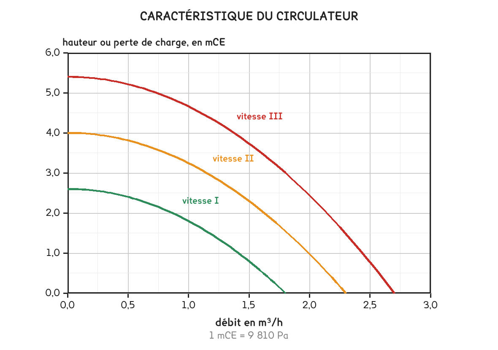

BTS FED option C · 2e année
Le circulateur propose, le réseau dispose. Là où leurs deux courbes se croisent, l'installation travaille, et personne ne lui a demandé son avis.
1 outil · 8 questions · 9 replis · 1 figure
Savoirs travaillés
C’est le point que la séance installe, et il n’est pas intuitif. Un réseau ne se comporte pas comme une résistance électrique, où doubler la tension double le courant.
Plus l’eau va vite, plus elle frotte. La perte de charge ne croît pas proportionnellement au débit : elle croît comme son carré.
Δp = k × Q²
Doubler le débit multiplie la perte de charge par quatre.
Le coefficient k se déduit d’un seul point mesuré ou calculé : k = Δp / Q². Une fois connu, il donne toute la courbe.
La courbe du réseau est une parabole qui part de zéro. À débit nul, aucune perte : un réseau à l’arrêt n’oppose rien.
Une pompe centrifuge ne fournit pas une pression constante. Plus on lui demande de débit, moins elle peut pousser fort : sa caractéristique descend quand Q augmente.
Un circulateur à trois vitesses porte donc trois courbes, l’une au-dessus de l’autre. La vitesse III pousse le plus fort, la I le moins.

Une courbe qui monte, une qui descend : elles se coupent en un seul point. C’est là, et nulle part ailleurs, que l’installation fonctionne.
Ce point n’est pas un choix. Il est imposé par la rencontre du réseau et de la pompe. On ne peut le déplacer qu’en changeant l’un des deux : changer de vitesse déplace la courbe de pompe, brider une vanne déplace la courbe de réseau.
Déplacez la résistance du réseau : la parabole se redresse, et les trois points de fonctionnement glissent tous vers la gauche. Un réseau plus résistant, c’est moins de débit, à circulateur inchangé.
Le débit obtenu est presque toujours supérieur à celui dont le circuit a besoin, même à la plus petite vitesse. Les circulateurs sont dimensionnés par gammes ; il n’en existe pas un par installation.
Un débit excessif a trois conséquences, et aucune n’est bonne.
L’écart départ / retour s’écrase. La puissance transportée étant P = Q × 1 163 × ΔT, un débit doublé pour la même puissance divise le ΔT par deux. Une chaudière à condensation, qui a besoin d’un retour froid, condense alors beaucoup moins.
Le bruit apparaît. La vitesse monte dans les tubes et dans les robinets, et un réseau qui siffle ne se corrige pas après coup.
Le circulateur consomme pour rien. Il pousse davantage d’eau que nécessaire, toute la saison de chauffe.
À observer en entreprise
Relever la vitesse sur laquelle est réglé un circulateur de l’entreprise. Demander au maître d’apprentissage pourquoi cette vitesse-là, la réponse est souvent « elle y était ».
Si l’installation dispose d’un compteur d’énergie ou de thermomètres de départ et de retour, relever le ΔT réel et le comparer au régime nominal de la plaque.
Pour aller plus loin
La perte de charge s’écrit j = λ ρ v² / (2 d), et la vitesse est proportionnelle au débit. Le terme v² donne donc déjà un carré.
Reste λ, qui dépend du débit lui aussi, par Blasius, λ varie comme Re^−0,25, donc comme Q^−0,25. Le produit λ v² varie ainsi comme Q^1,75, pas exactement comme Q².
L’exposant réel est donc voisin de 1,75, pas de 2. On retient 2 parce que l’écart est faible sur la plage utile, parce que les singularités, elles, sont bien en Q², et parce qu’une parabole se trace à la main.
Un logiciel de calcul, lui, garde l’exposant exact. C’est l’une des rares approximations du programme dont l’écart est mesurable, de l’ordre de 5 % sur la perte de charge, ce qui reste sous l’incertitude des longueurs équivalentes.
Tout ce qui précède suppose un circulateur à trois vitesses fixes. Les circulateurs posés aujourd’hui sont à vitesse variable, et la réglementation l’impose depuis 2013 pour les circulateurs de chauffage.
Un tel circulateur ne suit plus une courbe mais une famille de courbes, et son électronique choisit celle qui maintient une consigne. Deux lois de régulation :
L’intérêt n’est pas le confort mais la consommation : la puissance absorbée d’une pompe varie comme le cube du débit. Réduire le débit de 20 % réduit la consommation de moitié.
C’est aussi pourquoi la question « sur quelle vitesse est-il réglé ? » n’a plus de réponse simple sur une installation récente, mais la question « quel débit obtient-on vraiment ? » reste, elle, exactement la même.
| Ce qu’on change | La courbe qui bouge | Ce que devient le débit |
|---|---|---|
| Changer de vitesse | celle de la pompe | monte ou descend |
| Brider une vanne d’équilibrage | celle du réseau, plus raide | descend |
| Encrasser le réseau | celle du réseau, plus raide | descend |
| Ouvrir un by-pass | celle du réseau, plus plate | monte |
| Fermer des robinets thermostatiques | celle du réseau, plus raide | descend |
Cette dernière ligne mérite attention : quand les thermostatiques se ferment, le réseau devient plus résistant et le débit chute. Avec un circulateur à vitesse fixe, la pression monte alors dans les branches restées ouvertes, d’où les sifflements de mi-saison, et l’utilité de la régulation à pression proportionnelle.
Le graphique se lit vite, mais il se lit mal, et à l’épreuve on demande parfois de vérifier une valeur, ce qui suppose de calculer. Les deux courbes ont chacune une équation simple, et leur croisement se résout à la main.
1. La courbe du réseau. Elle passe par l’origine et croît comme le carré. Un seul point suffit à la fixer. Reprenons le circuit de la séance 8 : 2,6 mCE pour 1,03 m³/h.
k = Δp / Q² = 2,6 / 1,03² = 2,43
2. La courbe du circulateur. Sur son domaine utile, elle se modélise bien par une parabole décroissante. Le catalogue en donne deux ou trois points, dont la hauteur à débit nul, le point le plus haut de la courbe.
H = H₀ − a Q², par exemple H = 6,6 − 1,5 Q²
3. Le croisement. Les deux hauteurs sont égales au point de fonctionnement : ce que la pompe donne est exactement ce que le réseau prend.
H₀ − a Q² = k Q² → Q = √( H₀ / (a + k) )
Q = √( 6,6 / (1,5 + 2,43) ) = 1,30 m³/h, et H = 6,6 − 1,5 × 1,30² = 4,08 mCE
Le circuit demandait 1,03 m³/h, il en reçoit 1,30 : 26 % de trop. Ce n’est pas une erreur de calcul, c’est la réalité de toute installation, les circulateurs se vendent par gammes, pas sur mesure.
Et voilà ce que ça coûte. La puissance transportée est imposée par les émetteurs, pas par la pompe. Le débit augmente donc à puissance constante, et c’est l’écart départ / retour qui absorbe la différence :
ΔT = 24 000 / (1 163 × 1,30) = 15,9 K au lieu des 20 K prévus
Un régime 70/50 devient un 70/54. Une chaudière à condensation reçoit un retour à 54 °C au lieu de 50 : elle condense moins. C’est le lien direct avec la séance 11, et c’est pourquoi le trop-plein de débit n’est jamais neutre.
La démarche est courte, et chacune de ses quatre étapes est une question possible à l’épreuve.
1. Le point de fonctionnement requis. Un débit, issu de la puissance et du régime ; une hauteur manométrique, issue du bilan de charge du tronçon le plus défavorisé. Chez nous : 1,03 m³/h et 2,6 mCE.
2. Le report sur les courbes du catalogue. On place ce point sur le réseau de courbes du fabricant. Le circulateur retenu est celui dont une courbe passe juste au-dessus du point requis. Juste au-dessus, pas très au-dessus.
3. Le point de fonctionnement réel. C’est le croisement, pas le point requis. Il donne un débit supérieur, et c’est lui qui décide de la vitesse de l’eau, du bruit et de la consommation.
4. La vérification. Le débit réel reste-t-il sous 1 m/s dans les tubes ? L’écart départ / retour reste-t-il acceptable pour le générateur ?
Un circulateur ne se choisit jamais « avec de la marge ». La marge se paie trois fois : en bruit, en consommation permanente, et en écrasement du ΔT. Si un doute subsiste, on prend la taille en dessous et on monte d’une vitesse, pas l’inverse.
Ce que porte une plaque signalétique, et qu’il faut savoir lire :
| Mention | Ce que c’est |
|---|---|
| H max ou H₀ | la hauteur à débit nul, le haut de la courbe |
| Q max | le débit à hauteur nulle, le bas de la courbe |
| P₁ | la puissance électrique absorbée, celle qui se paie |
| EEI | l’indice d’efficacité énergétique : plus il est bas, mieux c’est |
| I, II, III | les trois vitesses, donc les trois courbes |
Quand on change la vitesse de rotation d’une pompe ou d’un ventilateur, les trois grandeurs ne suivent pas la même loi. C’est le résultat le plus utile de toute la séquence, et il ressert en séances 17 et 19.
Q ∝ N · H ∝ N² · P ∝ N³
Le débit suit, la hauteur suit au carré, la puissance suit au cube.
| On passe la vitesse à | Le débit devient | La hauteur devient | La puissance devient |
|---|---|---|---|
| 75 % | 75 % | 56 % | 42 % |
| 50 % | 50 % | 25 % | 12 % |
Descendre d’un cran de vitesse coûte un quart du débit et fait économiser près de 60 % de la consommation. C’est le calcul qui justifie à lui seul le circulateur à vitesse variable, et c’est exactement la même loi qui justifie le débit d’air variable sur une CTA.
Ces lois relient un même appareil à deux vitesses. Elles ne comparent pas deux pompes différentes, et elles ne disent rien de la courbe du réseau, qui ne bouge pas quand la pompe ralentit. Le point de fonctionnement, lui, se déplace le long de la parabole du réseau.
Le contrôle de vraisemblance. Si vous trouvez qu’une pompe ralentie de 25 % consomme 75 % de sa puissance, vous avez appliqué la loi du débit à la puissance. Le bon réflexe : la puissance est le produit d’un débit et d’une pression, donc elle subit les deux effets à la fois.
Un circulateur consomme peu à l’instant (quelques dizaines de watts) mais il tourne cinq à sept mille heures par an. C’est cette durée qui fait la facture.
Le rendement d’un ancien circulateur à rotor noyé et moteur asynchrone plafonne autour de 20 à 25 %. Le reste part en chaleur dans l’eau. Un circulateur récent à moteur synchrone à aimants permanents, piloté par variateur, dépasse largement le double, et surtout il module.
L’indice EEI (Energy Efficiency Index) a été institué pour rendre les appareils comparables sur un profil de charge annuel, et non à un seul point de fonctionnement. Plus il est bas, meilleur est l’appareil. La réglementation européenne d’écoconception a progressivement interdit la mise sur le marché des circulateurs au-dessus d’un seuil, ce qui a fait disparaître les modèles à trois vitesses fixes du neuf.
La valeur du seuil et son calendrier ne se récitent pas : ils se lisent dans le règlement en vigueur ou dans le CCTP du projet. Ce qui est à retenir, c’est le sens de l’indice et le fait qu’un remplacement de circulateur soit aujourd’hui l’un des gestes de rénovation au temps de retour le plus court.
Le calcul de temps de retour, qui est une question d’épreuve classique : on compare deux puissances absorbées sur la durée annuelle de fonctionnement, on convertit en euros, et on divise le surcoût d’achat par l’économie annuelle. C’est exactement l’outil de la séance 5.
Un bureau d’études double parfois la pompe. Les deux montages n’ont ni le même but ni le même effet, et les confondre est une erreur classique.
En parallèle, pour le débit. Les deux pompes puisent au même endroit et refoulent au même endroit. À hauteur donnée, les débits s’ajoutent. La courbe résultante se construit en doublant l’abscisse à chaque ordonnée.
Mais le réseau, lui, n’a pas changé : sa parabole est toujours la même. Le nouveau point de fonctionnement monte le long de cette parabole, donc le débit total est loin d’être doublé, typiquement +30 à +40 %. C’est le piège du montage : deux pompes ne font pas deux fois le débit.
En série, pour la hauteur. L’une refoule dans l’autre. À débit donné, les hauteurs s’ajoutent. On y recourt quand un réseau est très résistant : grande hauteur d’immeuble, réseau très long.
Pourquoi on double vraiment, dans neuf cas sur dix : ce n’est ni pour le débit ni pour la hauteur, c’est pour la redondance. Deux pompes en parallèle avec permutation automatique, une qui tourne et une en secours, sur un bâtiment où l’arrêt du chauffage n’est pas acceptable, un hôpital, un musée, une piscine. Le CCTP l’écrit alors noir sur blanc, et la GTB gère la permutation : c’est un point de commande de la séance 20.
Une machine frigorifique a elle aussi un point de fonctionnement, et il se construit comme celui de cette séance : deux courbes qui se croisent.
| Sur un circuit d’eau | Sur un circuit frigorifique |
|---|---|
| la pompe fournit une hauteur | le compresseur aspire un débit massique |
| le réseau oppose une résistance | le détendeur laisse passer un débit |
| l’intersection donne débit et pression | l’intersection donne les deux pressions, HP et BP |
Le compresseur aspire d’autant plus de masse que la pression d’aspiration est haute ; le détendeur laisse passer d’autant plus que l’écart HP − BP est grand. Les deux courbes vont en sens contraire, donc elles se croisent en un seul point, et c’est ce point qui fixe les pressions lues au manomètre.
Ce que cela explique immédiatement. Un évaporateur encrassé ou un filtre à air bouché échange moins : la pression d’aspiration tombe. Un condenseur sale ou un ventilateur arrêté évacue moins : la pression de refoulement monte. Dans les deux cas, la machine se déplace le long de ses courbes, sans qu’aucun composant soit en panne.
C’est le raisonnement qui évite de changer un compresseur pour rien. Des pressions anormales sont d’abord le symptôme d’un déplacement du point de fonctionnement, pas une panne de machine. On cherche l’échange avant de soupçonner l’organe, exactement la démarche de la séance 9 sur le débit d’un circuit.
Le diagnostic frigorifique consiste presque entièrement à lire ce déplacement. C’est la partie la plus intellectuelle de l’attestation, et la plus proche de ce que vous savez déjà faire.
Cette page rappelle la séance. Elle ne remplace pas le polycopié et ne donne aucun corrigé. Tous les calculs se font dans votre navigateur ; rien n'est enregistré.